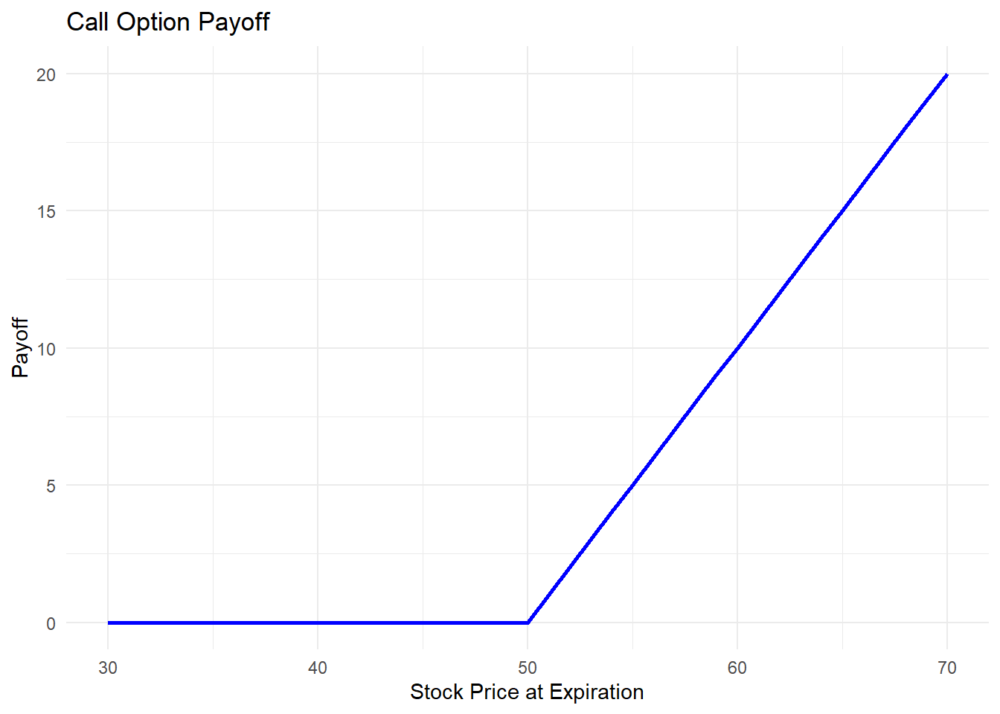
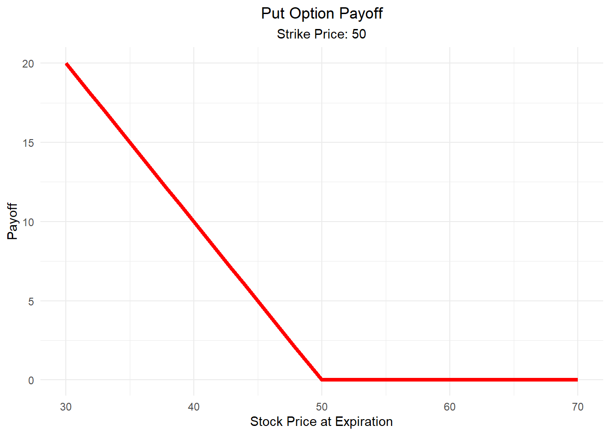
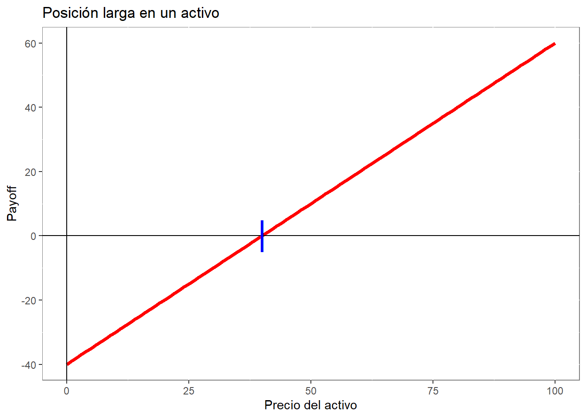
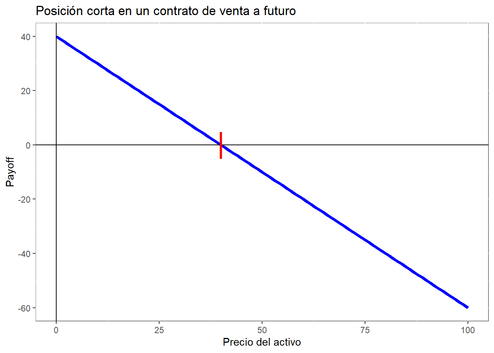
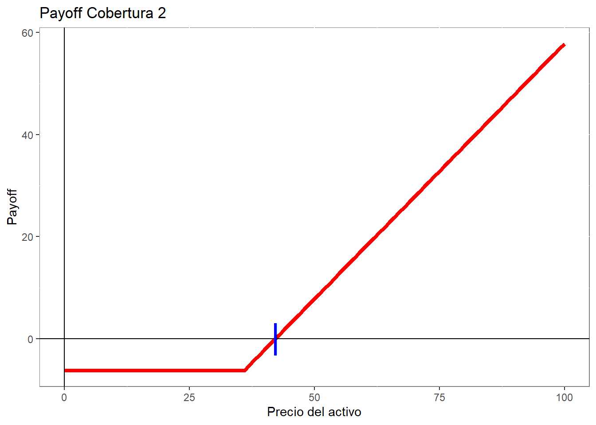

“Los contratos de opciones sobre activos, son instrumentos financieros estandarizados, que mediante el pago de una prima de la opción, otorgan a su poseedor (comprador o tomador) el derecho, pero no la obligación, de comprar o vender a un precio previamente establecido y durante un plazo prefijado, una cantidad determinada del activo individualizado en el contrato.
Por otro lado, los vendedores de los contratos de Opciones (o “lanzadores”) tienen la obligación de vender o comprar el activo objeto en los mismos términos anteriormente señalados, en el caso que el comprador (o “tomador”) de las opciones manifieste su deseo de ejecutar la opción.”
En base a los anterior, existe dos tipos de opciones:
Opciones de Compra (Call Options): Una opción de compra le da al comprador el derecho de comprar un activo a un precio fijo, conocido como precio de ejercicio (strike price). Si el precio del activo subyacente aumenta por encima del precio de ejercicio, el comprador puede ejercer la opción para obtener una ganancia, comprando el activo al precio de ejercicio más bajo y vendiéndolo al precio de mercado actual. Si el precio del activo está por debajo del precio de ejercicio en la fecha de vencimiento, la opción expira sin valor y el comprador solo pierde la prima pagada por la opción.
Opciones de Venta (Put Options): Una opción de venta da al comprador el derecho de vender un activo a un precio fijo (precio de ejercicio). Esta opción se utiliza generalmente para protegerse contra la caída del precio del activo subyacente. Si el precio del activo cae por debajo del precio de ejercicio, el comprador puede ejercer la opción vendiendo el activo al precio de ejercicio, que será mayor que el precio de mercado actual. Si el precio del activo es mayor que el precio de ejercicio en la fecha de vencimiento, la opción expira sin valor.
Algunas definiciones:
Prima: El costo de comprar la opción, que el comprador paga al vendedor.
Fecha de Vencimiento: La última fecha en la que la opción puede ser ejercida.
Precio de Ejercicio: El precio al cual el comprador de la opción puede comprar o vender el activo subyacente.
Americana veruss europea: Las opciones americanas pueden ser ejercidas en cualquier momento del tiempo, mientras que las europeas solo al momento de expirar.
Veamos las aplicaciones gráficas:
Contrato de opción de compra: derecho a comprar a un precio determinado
# Set parametersstrike_price <-50stock_prices <-seq(from =30, to =70, by =1)# Calculate the payoffpayoff <-pmax(stock_prices - strike_price, 0)# Create a dataframeoption_data <-data.frame(StockPrice = stock_prices, Payoff = payoff)# Plotting the call option payoffoption_plot <-ggplot(option_data, aes(x = StockPrice, y = Payoff)) +geom_line(color ="blue", size =1) +labs(title ="Call Option Payoff", x ="Stock Price at Expiration", y ="Payoff") +theme_minimal()
Warning: Using `size` aesthetic for lines was deprecated in ggplot2 3.4.0.
ℹ Please use `linewidth` instead.
# Display the plotprint(option_plot)

Contrato de opción de venta: derecho a vender a un precio determinado
# Parametersstrike_price <-50stock_prices <-seq(from =30, to =70, by =1)# Calculate the payoff for a put optionpayoff <-pmax(strike_price - stock_prices, 0)# Create a dataframeoption_data <-data.frame(StockPrice = stock_prices, Payoff = payoff)# Plotting the put option payoffoption_plot <-ggplot(option_data, aes(x = StockPrice, y = Payoff)) +geom_line(color ="red", size =1.5) +# Red line for visibilitylabs(title ="Put Option Payoff",x ="Stock Price at Expiration",y ="Payoff",subtitle ="Strike Price: 50") +theme_minimal() +theme(plot.title =element_text(hjust =0.5), # Centering titleplot.subtitle =element_text(hjust =0.5)) # Centering subtitle# Display the plotprint(option_plot)

Para practicar las visualizaciones, veremos la aplicación de esto en el contexto de derivados financieros y construcción de estrategias.
Por otra parte, se deben definir algunos conceptos:
Precio Strike (k), corresponde al precio negociado en el contrato de opciones.
Precio Spot (S_0), corresponde al precio del activo en el momento t.
Ejemplo: Mineral de Hierro.
Al producir el mineral, de manera natural se obtiene una posición larga (tenencia del activo) en el tiempo, lógicamente en la medida que el precio del activo suba, muy probablemente las ganancias de la empresa también; lo mismo en el caso inverso.
Existe incertidumbre respecto a la dinámica futura del precio del activo, por esto, la empresa puede buscar disminuir el riesgo de precios a través de la utilización de coberturas.
Estrategias de coberturas, para el mineral de hierro.
Coberturas futuros o forwards.
La diferencia entre un futuro y forward es que el primero se negocia en la bolsa, y el segundo es un OTC (over the counter) o sea, un contrato privado entre dos partes. La estrategia sería la siguiente:
Empresa fija un precio de venta o referencia (strike), el cual al menos cubre toda la operación.
Warning in geom_point(aes(x = 40, y = 0), colour = "blue", shape = "|", : All aesthetics have length 1, but the data has 2 rows.
ℹ Please consider using `annotate()` or provide this layer with data containing
a single row.

Genera y vende contrato de compra futura, estableciendo el precio strike de venta.
p4 <-ggplot(data.frame(x =c(0, 100)), aes(x = x))fun.4<-function(x) -x +40p4 <- p4 +stat_function(fun = fun.4, colour ="blue", size=1.5)p4 <- p4 +scale_x_continuous("Precio del activo") +scale_y_continuous("Payoff") +geom_hline(yintercept =0, colour ="black") +geom_vline(xintercept =0, colour ="black") +theme(panel.background =element_rect(fill ="white", colour ="grey50")) +ggtitle("Posición corta en un contrato de venta a futuro") +geom_point(aes(x=40, y=0), colour="red", shape="|", size=10)p4
Warning in geom_point(aes(x = 40, y = 0), colour = "red", shape = "|", size = 10): All aesthetics have length 1, but the data has 2 rows.
ℹ Please consider using `annotate()` or provide this layer with data containing
a single row.

Payoff: Precio spot del activo al momento de vencer el contrato es mayor que el precio strike, la empresa gana por la posición larga en el activo. Sin embargo, pierde por el acuerdo de vender a precio strike.
Explicación: estoy obligado a vender cuando el precio del activo es menor al strike, y debo no ejecutar la opción cuando el precio spot es mayor al strike.
Cuando el precio strike es próximo al spot, el precio de la opción aumenta, lo que se conoce premio por el contrato, que en el fondo es un costo de la estrategia. El premio va a depender de la volatilidad implícita en los contratos, la volatilidad aumenta cuando la diferencia entre el spot y el strike es mayor; por lo tanto, el precio de la opción es menor.
La opción tiene la ventaja de poder aprovechar las rachas alcistas del precio del activo y limitar las pérdidas asociadas a una racha bajista, funcionando como un seguro. La desventaja es el costo asociado a tomar la opción.
Precio del activo mayor que el spot, no se ejerce la opción de venta, y se gana por la parte del activo. A pesar de esto, se debe considerar que la opción tuvo un valor.
Precio del activo menor que el spot, se ejerce la opción, y se pierde porque hay que salir a vender el activo.
Warning in geom_point(aes(x = 42.2, y = 0), colour = "blue", shape = "|", : All aesthetics have length 1, but the data has 2 rows.
ℹ Please consider using `annotate()` or provide this layer with data containing
a single row.

Recordar que la opción solo se ejerce cuando conviene. Esto obviamente depende de la posición y la opción que se posea.
La estrategia puede ser autofinanciada agregando a lo anterior la venta de una opción de compra. En términos gráficos:
Una posición corta en una opción de compra, implica que yo le doy el derecho a un tercero de que me compre un activo. Por esto, cuando el precio spot sea menor que el strike, el tercero no ejercerá la opción de compra y comprará en el mercado. Por el contrario, en el caso de que el precio spot sea mayor que el precio strike, me generará una pérdida debido a que estaré obligado a venderle a un precio inferior al de mercado.